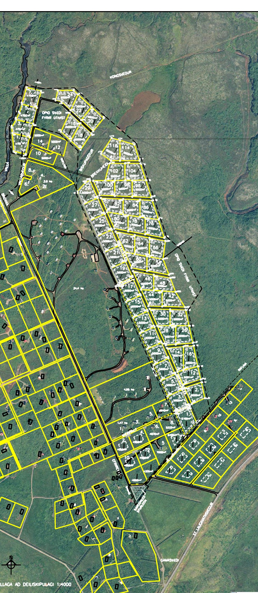

~2 km
Brúarfoss
Túrkisblár foss í Brúará, vinsæl gönguleið.
Gróðursælt frístundasvæði við Brúará, í hjarta Gullna hringsins.
Brekkuskógur er gróðursælt frístundasvæði í Biskupstungum í Bláskógabyggð, þekkt fyrir skógrækt, kyrrð og fallegt umhverfi. Lóðirnar liggja í skjólsælu, grónu landi þar sem stutt er í gönguleiðir og náttúru.
Áin Brúará rennur skammt frá svæðinu og þar undir er Brúarfoss — einn fegursti foss landsins með sínum einkennandi túrkisbláa lit. Svæðið er kjörið til útivistar allan ársins hring.

Lóðirnar eru afmarkaðar samkvæmt samþykktu deiliskipulagi. Hver lóð hefur landmæld hnit úr fasteignaskrá og er sýnd á réttum stað á gervihnattakortinu — ekki teiknað eftir auga.
Túrkisblár foss í Brúará, vinsæl gönguleið.
Golfvöllur, sundlaug og veitingar í næsta nágrenni.
Verslun, sundlaug og þjónusta í Biskupstungum.
Haukadalur og hverasvæðið Geysir með Strokki.
Vatn, gufuböð (Fontana) og þjónusta.
Einn þekktasti foss landsins.
Gamla laugin (Secret Lagoon) og þjónusta.
Þjóðgarður og heimsminjar á Gullna hringnum.
Vegalengdir eru u.þ.b. og miðast við akstur frá svæðinu.
Allar lóðir á réttum, landmældum stað — litmerktar eftir stöðu.